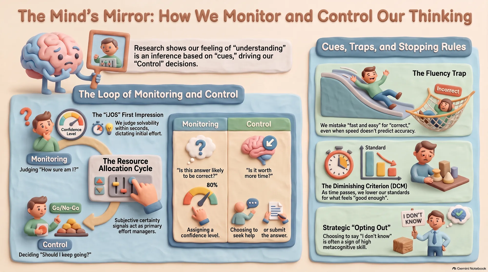

מחקר עומק
התחושה שהבנת היא שיפוט, והיא זו שמחליטה מתי תפסיק לחשוב
אקרמן וזלמנוב הראו ב-2012 שתשובות שהגיעו מהר זכו לביטחון גבוה יותר גם כשהמהירות לא ניבאה נכונות. במחקר חדש עם 596 משתתפים מתברר שיש רף נפרד לוויתור, והוא יציב. ובניסוי שאינו שלה, 246 משתמשי ChatGPT השתפרו בשלוש נקודות והעריכו את עצמם ביתר בארבע.
{kind=link}

השפה היומיומית מערבבת שני דברים שונים לגמרי. האחד הוא ההערכה: כמה אני בטוח, האם באמת למדתי את הטקסט, האם הבעיה הזאת ניתנת בכלל לפתרון. השני הוא מה שאנחנו עושים בעקבותיה: להמשיך לקרוא, לבדוק שוב, לחפש מידע, לבקש עזרה, להגיש, לוותר. פרופ' רקפת אקרמן מהפקולטה למדעי הנתונים וההחלטות בטכניון בנתה תוכנית מחקר שלמה על ההפרדה הזאת, יחד עם ולרי תומפסון, תחת השם meta-reasoning. המסקנה שנובעת ממנה מטרידה יותר משנדמה בהתחלה: טעות בהערכה אינה נשארת תחושה. היא הופכת לטעות בהקצאת הזמן.
כי התחושה שאנחנו מבינים אינה קריאה ישירה של מצב הידע במוח. אין שם מד. המערכת מסיקה שהבנו מתוך רמזים עקיפים וזמינים: כמה מהר הגיעה התשובה, כמה קשה היה לחשוב עליה, האם החומר מרגיש מוכר, האם הפתרון נראה שוטף וקוהרנטי, מה ציפינו מראש לגבי הקושי. לפעמים גם מאפיינים של הממשק שבו קראנו. הרמזים האלה שימושיים, והם גם אינם בהכרח מנבאים נכונות.
הניסוי הצלול ביותר בכיוון הזה הוא מאמר של אקרמן וחגר זלמנוב מ-2012. הן השתמשו בזמן תגובה כמדד של שטף, ובנו מצבים שבהם למהירות הייתה תקפות שונה לגמרי לניבוי הצלחה. בבעיות מטעות בפורמט פתוח תשובות מהירות לא היו אמינות יותר מאיטיות. במשימות אחרות המהירות דווקא ניבאה נכונות היטב. הקשר הסובייקטיבי נשמר בכל המקרים: פתרונות שהופקו מהר זכו לביטחון גבוה יותר, גם בסביבה שבה המהירות לא לימדה דבר.
זה אינו סיפור על אנשים לא רציונליים. המוח למד כלל שעובד: בעולם, דברים שאנחנו יודעים היטב אכן נשלפים מהר. הבעיה היא חוסר גמישות. הכלל ממשיך לפעול גם כשמבנה המשימה הופך את הרמז לחסר תוקף. אקרמן מדגישה שהאמינות של הקשר בין מהירות לביטחון תלויה בשאלה עד כמה מהירות באמת מנבאת דיוק באותה סביבה מסוימת, ולא בשאלה אם מהירות היא רמז טוב באופן כללי.
מכאן נובעת תובנה לא נוחה לגבי חשיבה עמוקה. קושי סובייקטיבי יכול להיות דווקא הסימן לכך שאנחנו עושים עבודה קוגניטיבית מועילה. במשימה שבה האינטואיציה הראשונה מטעה, תשובה מהירה עלולה להיות שגויה ובטוחה, בעוד שתשובה נכונה דורשת עיכוב, בדיקה ותיקון. אלה בדיוק הדברים שמורידים את תחושת השטף. אין התאמה הכרחית בין מרגיש לי ברור ובין עברתי תהליך ניתוח טוב יותר.
אותו מנגנון מסביר קו מחקר ותיק שלה על קריאה ממסך מול נייר, עם מוריס גולדסמית', תרצה לאוטרמן ויעל סידי. הממצא אינו שהמסך גרוע. בניסויים שבהם הלומדים ויסתו בעצמם את זמן הלימוד, קוראים על מסך נטו לביטחון עודף ולא הפיקו מהזמן הנוסף את השיפור שהופיע אצל קוראים על נייר. כשהזמן הוגבל מבחוץ, ההבדל לא הופיע באותה צורה. המדיום עובד כרמז ומשנה את הציפייה הסמויה לכמה יסודית צריכה החשיבה להיות. לאוטרמן ואקרמן פרסמו ב-2014 עבודה שכותרתה אומרת זאת במפורש: התגברות על נחיתות המסך. האפקט תלוי תנאים וניתן לביטול.
ההחלטה כמה להשקיע מתחילה מוקדם בהרבה ממה שנדמה. עם לאוטרמן פיתחה אקרמן את המושג iJOS, שיפוט ראשוני של סיכויי הפתרון. במחקר מ-2019 קיבלו משתתפים ארבע שניות בלבד לתת שיפוט כזה על מטריצות ראוון, ורק אחר כך פתרו בלי מגבלת זמן. השיפוט המוקדם ניבא היבטים של תהליך הפתרון עצמו. כלומר עוד לפני שיש תשובה, כבר נוצר אות שקובע אם וכמה ננסה. בעיה שנראית חסרת סיכוי מפסידה משאבים לפני שנעשה בה ניסיון רציני, ובעיה שנראית קלה מקבלת מעט מדי בדיקה.
ומתי מפסיקים. התרומה התיאורטית המזוהה ביותר עם אקרמן היא מודל הקריטריון הפוחת, שפורסם ב-2014. הוא פותר פרדוקס פשוט: אם לאדם יש רף ביטחון קבוע, נניח שלא יגיש תשובה עד שיהיה בטוח ב-80 אחוזים, מה הוא אמור לעשות בבעיה קשה שבה לעולם לא יגיע לשם. מודל עם רף קבוע מנבא התמדה בלתי סבירה. בפועל אנשים מפסיקים. המודל מציע שהקריטריון הנדרש להגשה יורד ככל שהזמן חולף, בתוך אותה בעיה. לכן שני דפוסים שנראים סותרים מתקיימים יחד: בתוך בעיה הביטחון עולה ככל שמתקדמים, ובין בעיות דווקא אלה שלקחו הכי הרבה זמן מסתיימות בביטחון נמוך יותר.
העבודה החדשה ביותר שלה מוסיפה רף שלישי. המאמר It's Time to Opt Out, שמופיע השנה בכתב העת Journal of Experimental Psychology: Learning, Memory, and Cognition, בדק בשלושה ניסויים ועם 596 משתתפים לא רק מתי אנשים מגישים תשובה, אלא מתי הם מחליטים שאין טעם להמשיך. המודל מפריד בין רף ההגשה, מגבלת הזמן, ורף הוויתור. הממצא המעניין הוא שתדירות הוויתור השתנתה עם המשימה, עם התמריצים ועם המשתתפים, אבל רמת הביטחון שבה אנשים בחרו לוותר הייתה יציבה יחסית ולא הייתה פונקציה של כמה זמן כבר עבר. אקרמן וסידי טוענות מכאן שוויתור אינו קריסה אלא פעולת שליטה, ובסקירה מ-2024 הן מציעות לראות בו מיומנות חינוכית שכדאי ללמד. בחינוך הימנעות מתשובה נתפסת לעיתים כמוטיבציה נמוכה, ובמחקר מטא-קוגניטיבי היכולת להימנע אסטרטגית מתשובות חלשות משפרת את איכות הפלט.
עכשיו לשאלה שכולם רוצים לשאול, ולסייג שהמסמך עצמו מציב לפניה. בחיפוש ברשימת הפרסומים הרשמית של אקרמן, המעודכנת עד 2026, לא אותר מחקר אמפירי שלה שבו המשתנה המרכזי הוא ChatGPT או בינה מלאכותית גנרטיבית. לכן אין לייחס לה את הטענה שבינה מלאכותית יוצרת אשליית הבנה. מה שכן נובע מהמודל שלה הוא השערה, והיא חזקה: תשובה של מודל שפה מגיעה מיד, ארוכה, קוהרנטית ומנוסחת היטב. זו סביבת שטף גבוהה במיוחד, והמשתמש עלול לייחס בטעות את השטף של הטקסט שקיבל לאיכות הידע שיש לו. המעבר הוא מההסבר קל לי לקריאה אל אני מבין את הנושא.
יש כאן גם בעיה חבויה שאינה עניין של עצלנות. כשאדם פותר בעיה בעצמו הוא מקבל שורה של רמזים פנימיים: כמה זמן נדרש, איפה נתקע, כמה חלופות עלו, האם חש קונפליקט, האם נדרש תיקון. אצל אקרמן אלה חומר הגלם של הניטור. כשהמודל מבצע את שלב היצירה, המשתמש רואה בעיקר את התוצר הסופי. הוא אינו חווה את החיפוש שהוביל אליו. גם אדם עם מטא-קוגניציה מצוינת ביחס לחשיבה של עצמו אינו מקבל בהכרח רמזים אבחוניים לגבי החשיבה של המודל.
לראיה אמפירית צריך לפנות לאחרים. בעבודה של פרננדס ועמיתים בכנס CHI השתמשו 246 משתתפים ב-ChatGPT-4o כדי לפתור עשרים בעיות הסקה מתוך מבחן ה-LSAT. ביצועיהם היו גבוהים בשלוש נקודות מאוכלוסיית נורמה, והם העריכו את עצמם ביתר בארבע נקודות. מכיוון שההשוואה נעשתה מול נורמה ולא מול זרוע אקראית מקבילה, אין לקרוא את שלוש הנקודות כאפקט סיבתי מדויק. הפער בין הביצוע להערכה העצמית, בתוך אותה קבוצה, הוא הממצא הישיר יותר. סקר של לי ועמיתים ב-CHI 2025, ובו 319 עובדי ידע שתיארו 936 מקרי שימוש אמיתיים, מצא שביטחון גבוה יותר בכלי נקשר לפחות חשיבה ביקורתית מדווחת, וביטחון עצמי גבוה יותר במשימה נקשר ליותר. זהו דיווח עצמי, ולכן הוא מראה קשר ולא סיבתיות.
השורה שאקרמן מותירה אינה אל תסמכו על עצמכם. היא מדויקת יותר. ודאות היא כלי. תחושת קושי היא כלי. זמן הוא כלי. שטף הוא כלי. הסכמה של אחרים היא כלי, ומודל שפה הוא כלי. כל אחד מהם הופך למסוכן ברגע שאנחנו שוכחים לשאול על מה הוא נשען: מהו הרמז שעליו מונח השיפוט שלי כרגע, והאם בעולם הספציפי שבו אני פועל הרמז הזה באמת מנבא את מה שאני חושב שהוא מנבא.